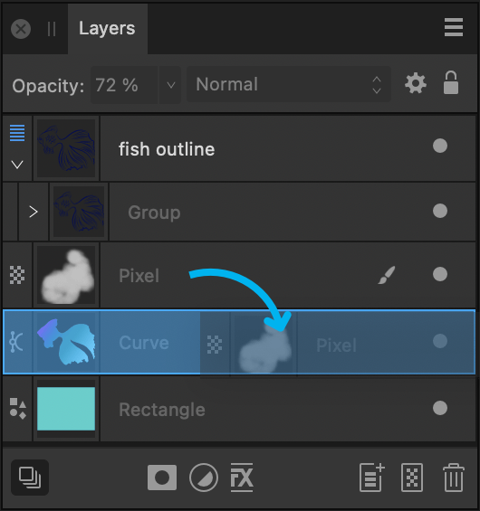

Layer clipping
Clipping involves positioning one layer or object inside another, creating a parent - child layer relationship. The path of the parent becomes the new boundaries for the child. Any areas of the child layer (object) which lie outside its parent's path are masked (hidden).



Clipping can also be used to confine an adjustment, filter or mask to a single layer or layer group.